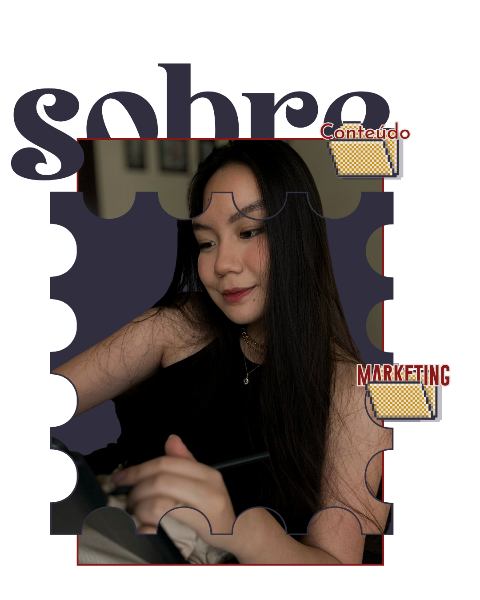

Aqui a estratégia vem antes de qualquer coisa.
Sou a Bianca, Relações Públicas pela Unesp, especialista em estratégia de conteúdo e comunicação digital. Minha missão é transformar marcas em presenças digitais com propósito, indo além das postagens e ajudando empresas a construírem posicionamento claro, comunicação consistente e conexão real com o seu público.
Desde 2019, trabalho com empresas dos mais diversos segmentos: indústrias, varejo, e-commerces, terceiro setor, influenciadores e marcas pessoais em nichos que vão do entretenimento à medicina, com perfis do zero a mais de 300 mil seguidores. Tudo isso para criar estratégias que não são apenas conteúdo, mas que nascem de um processo personalizado, honesto e pensado para a realidade de cada marca.
Porque acredito que uma marca forte é aquela que sabe quem é, o que tem a dizer e como quer ser lembrada.
Escolha o formato que faz mais sentido pra fase do seu negócio agora.
Para quem já tem um negócio rodando, mas sente que falta estratégia clara e não sabe por onde priorizar.
Para quem não tem tempo de pensar em conteúdo e quer só executar.
Para quem está criando ou repaginando a marca e precisa de estratégia + identidade visual.
Personalizável conforme o tamanho e a necessidade da sua marca.
É uma reunião rápida, sem compromisso, pra eu entender seu momento atual e indicar qual dos formatos faz mais sentido pro seu negócio agora.
Não. Atendo desde perfis que estão começando do zero até contas com centenas de milhares de seguidores — a estratégia é sempre adaptada ao ponto em que você está.
Depende do serviço. No Calendário de Conteúdo eu cuido da estratégia, das ideias e da organização — quem grava, edita e posta é você (ou sua equipe). Se quiser algo mais completo, conversamos sobre um formato personalizado, como a Gestão Completa de Redes Sociais.
Normalmente a Consultoria de Conteúdo, porque mapeia sua rotina e sua comunicação antes de qualquer produção de conteúdo, e evita que você invista tempo e dinheiro na direção errada.
Sim. Muitas clientes começam pela consultoria e migram pro calendário de conteúdo em seguida — o formato acompanha a fase do seu negócio.
O Calendário de Conteúdo tem mínimo de 3 meses. Depois disso, sim, e também dá pra renovar por mais meses.
Aceitamos Pix, boleto e parcelamento no cartão, com os juros do cartão. Se quiser, a gente simula as opções antes de fechar.
Me conta um pouco sobre a sua marca e eu te ajudo a encontrar o formato ideal.
Falar no WhatsApp